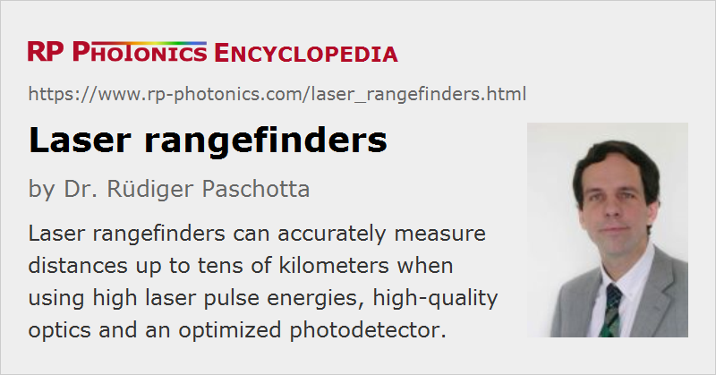

Laser Rangefinders
Definition: devices for measuring distances to objects, using lasers
German: Laser-Entfernungsmesser
How to cite the article; suggest additional literature
Author: Dr. Rüdiger Paschotta
Laser rangefinders are devices containing a laser with which one can measure the distance to an object. Typically, such a device works either with the direct time-of-flight method or with the phase shift method. Both methods are explained below. For other distance measurement methods with lasers, see the article on distance measurements with lasers.
Different devices have been developed. Some can measure object distances of multiple kilometers, while others are designed for much smaller distances e.g. within a building. Often, the obtained object distance appears on a digital display.
Compared with ultrasonic or radio and microwave frequency devices (radar), the main advantage of laser distance measurement techniques is that laser light has a much smaller wavelength, allowing one to send out a much more concentrated probe beam and thus to achieve a higher transverse spatial resolution.
Laser rangefinders often contain viewing devices, allowing the user to precisely direct the laser beam at the object of interest simply by orientating the device such that the object of interest appears at the center of the viewed image, marked with a cross hair. (The measured distance may be displayed in the same viewing device.) In other cases, a visible laser beam (from the measurement laser or possibly from a separate built-in laser pointer) can be seen on a not too distant object for checking the targeted position.
Apart from the laser, photodetector and optical parts, a laser rangefinder contains electronics, typically including a microprocessor, for controlling the laser, calculating and displaying the measured distance, monitoring and charging the battery, etc.
Direct Time-of-Flight Measurements
The most straightforward measurement principle is to send a short laser pulse from the device to the object of interest and monitor the time until reflected or scattered light can be detected with a sufficiently fast photodetector. The distance can then simply be calculated as one half the measured round-trip time divided by the velocity of light.
Obviously, the achievable spatial resolution is limited by the pulse duration and/or the speed of the photodetector. One frequently uses pulses from a Q-switched laser, having durations of a few nanoseconds or sometimes even below 1 ns, as can be obtained from particularly compact lasers, e.g. monolithic passively Q-switched microchip lasers. A fast photodiode can offer a temporal resolution of the same order, although that is not easy to achieve for very low received optical powers, as result for large observation distances, particularly when light from diffuse scattering must be used. Note that the received optical pulse energy is proportional to the inverse square of the observation distance as long as the beam divergence of the outgoing beam is negligible; otherwise, it decays even more rapidly for increased distances.
Over long distances, the beam divergence may lead to a substantially increased spot size on the object, and atmospheric distortions may add to that challenge. Particularly for small objects, increases of the spot size on the object may degrade the received signal strength, and there may be disturbances by light scattered on neighbored objects.
Different measures can be taken to improve the received signal strength and the signal-to-noise ratio, so that measurements over large distances are possible:
- Obviously, a high pulse energy of the laser can help. However, limitations may arise not only from the use laser technology, but also from the aspect of eye safety – particularly for near-infrared lasers.
- The beam divergence can be reduced by using a telescope for increasing the beam radius at the output aperture. The same telescope may be used for collecting more light from the object. However, this approach may be limited by the required compactness and low weight of the device or by the cost of a large aperture telescope.
- With some precisely aligned mirror or a kind of retroreflector, one can easily obtain much stronger signals. This method has been extensively used, for example, with retroreflectors placed on the moon during an Apollo mission. However, many applications require the operation with diffusely scattering objects.
- One may use a particularly sensitive photodetector, e.g. an avalanche photodiode.
- An optical bandpass filter makes it possible to very effectively remove noise influences at other optical frequencies.
- Further, electronic signal processing can help substantially. One may e.g. receive data from multiple laser pulses and improve the signal-to-noise ratio with averaging techniques.
For rapid measurement updates or for averaging purposes, one may use a regular pulse train with a certain pulse repetition rate. For high repetition rates, this generates a range ambiguity; the device has to determine to which sent-out pulse a received pulse belongs. Variable repetition rates or bursts of pulses may be used to resolve that.
Laser rangefinders may also have to cope with additional challenges, such as spurious signals from small objects flying through the air (e.g. leaves) or attempts of jamming or blinding (in military applications).
Multiple Frequency Phase Shift Method
Instead of using laser pulses, one may send out light with a high-frequency sinusoidal intensity modulation. This can be obtained from a continuous-wave laser, the output beam of which is sent through an intensity modulator, generating a strong sinusoidal intensity modulation at a high frequency. Alternatively, one may directly modulate the laser, e.g. through the drive current of a laser diode. The photodetector will then also receive a signal with that modulation, and the relative phase shift between the two modulation signals depends on the distance of the object.
For a fixed modulation frequency f, there is an ambiguity of the measurement: if the object distance is changed by a multiple integer of c / (2 f), the phase of the detector signal changes by a multiple integer of 2π, i.e., effectively not at all. This ambiguity can be removed by doing measurements with multiple different frequencies and combining the results, typically with suitable software running on a microprocessor. That principle works well particularly if the requirements in terms of maximum object distances and spatial resolution are not too stringent.
The challenges of detecting weak signals for large object distances are in principle similar to those for direct time-of-flight measurements, but one may use a lock-in amplifier to detect the modulations with strong suppression of random noise influences. Overall, the detection becomes substantially easier to realize than for the direct time-of-flight method. Therefore, most handheld laser rangefinders for moderate object distances are working based on the phase shift method.
Additional Features
Some laser rangefinders have additional features which can be relevant for certain applications:
- Advanced viewing devices, possibly with variable magnification, make it easier to identify and precisely target certain objects.
- In addition to distances, some laser rangefinders can measure the relative velocity between object and observer by detecting shifts of optical frequency which are caused by the Doppler effect. That typically requires the use of a single-frequency laser source and additional means for optical heterodyne detection and signal processing.
- Some devices offer the calculation of areas or volumes from multiple measured distances.
- It may be possible to store multiple measurement results and/or to transmit them to other devices, e.g. via a wireless connection to a notebook or tablet.
Laser Safety Aspects
Range finding with lasers can raise serious laser safety issues, particularly when intense pulses from Q-switched lasers are used; that is often required for large detection distances in order not only to obtain a detectable amount of returned light, but also to avoid a dominating influence of ambient light. Then, however, inconvenient additional measures may have to be taken to ensure safety, particularly for human eyes.
Frequently, one tries to design devices to operate a laser safety class I, so that special additional laser safety measures are not required. That, however, can severely limit the optical power which can be sent to the target, and therefore the detection capabilities.
Such trade-offs can be mitigated by applying eye-safe lasers, e.g. in the 1.5-μm spectral region, where far more optical power can be safely used than e.g. in the 1-μm region. However, both the choice of lasers and photodetectors (and their performance) are then substantially limited, and the system cost may be significantly higher.
Various Issues
As mentioned above, beam divergence can be a serious issue for large object distances. A large optical telescope and a laser with high beam quality are then desirable.
As essentially all other measurement techniques using lasers, laser distance measurements can be affected by laser noise – although detection noise is usually the dominant issue. Other noise-related issues can arise from stray light and laser speckle effects.
The targets can have very different reflection and scattering properties. Problems can arise for very low reflection or for specular reflections. In the latter case, a lot of the incident light may be reflected in directions which are not useful for the detection.
Applications of Laser Rangefinders
Laser rangefinders has a number of quite different applications:
- There are military devices which often allow one to measure over distances of several kilometers or even tens of kilometers, e.g. for reconnaissance purposes. They may use fairly intense laser pulses with multi-millijoule energies, which are rather dangerous for the human eye (→ laser safety) even when using an “eye-safe” wavelength.
- Similar devices, typically follow-up distances, are used e.g. for geodetic measurements and on large construction sites.
- There are devices for use in forestry, for example for making forest inventories. They can contain special optical filters for suppressing detrimental effects of leaves on measurements.
- Different types of rangefinders are used for various industrial production processes and for civil engineering.
- There are cheap handheld rangefinders for indoor use, which are suitable only for quite limited distances, but with distance errors of e.g. only a few millimeters. They can be used e.g. for quickly measuring the size of rooms, requiring only a single person. They may provide additional features, e.g. the calculation of areas or volumes from multiple measured distances.
- Some types of sports (e.g. golf) and hunting require distance measurements which can be done with relatively inexpensive consumer rangefinders.
Suppliers
The RP Photonics Buyer's Guide contains 20 suppliers for laser rangefinders. Among them:
Questions and Comments from Users
Here you can submit questions and comments. As far as they get accepted by the author, they will appear above this paragraph together with the author’s answer. The author will decide on acceptance based on certain criteria. Essentially, the issue must be of sufficiently broad interest.
Please do not enter personal data here; we would otherwise delete it soon. (See also our privacy declaration.) If you wish to receive personal feedback or consultancy from the author, please contact him e.g. via e-mail.
By submitting the information, you give your consent to the potential publication of your inputs on our website according to our rules. (If you later retract your consent, we will delete those inputs.) As your inputs are first reviewed by the author, they may be published with some delay.
See also: distance measurements with lasers, time-of-flight measurements
and other articles in the category optical metrology
|  |
If you like this page, please share the link with your friends and colleagues, e.g. via social media:
These sharing buttons are implemented in a privacy-friendly way!